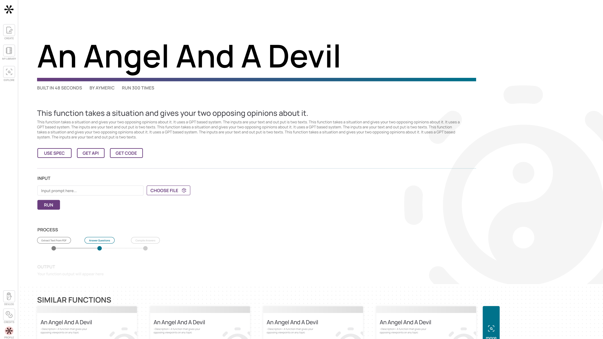

A glance.A name, one line, and Run. Enough for someone who only wants it done.
A read.What it does, how a run goes, and what else is like it.
A study.The spec. The API. The code.
The same page, all along.Nothing taken out for the beginner. Nothing hidden from the expert.
You do not have to choose who to build for. We keep the depth, and build the way up to it.